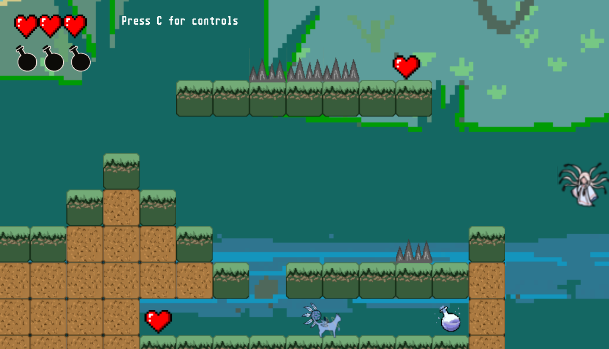
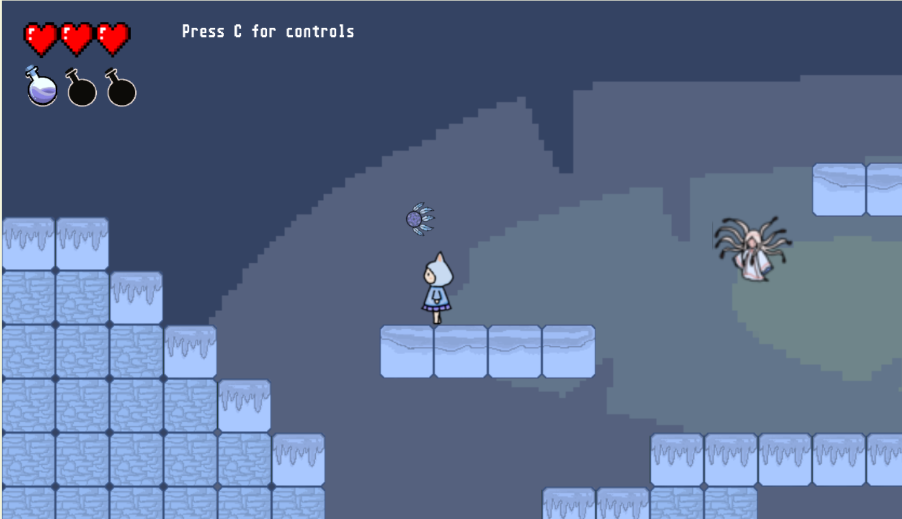
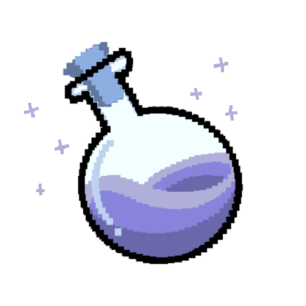

.gif)


Game Designer, Character Designer, Animation Designer
Phaser
2022
Embark on an immersive adventure with Dreamchaser, a captivating puzzle platformer that takes players on a profound journey through the realms of dreams and memories. This game offers a unique and engaging experience that combines compelling gameplay mechanics, a rich narrative, and visually stunning art styles.
Navigate dreamscapes, collect memories, and reclaim what's lost. Run, jump, change forms, and use a dreamcatcher. Face enemies and spikes, strategically collect hearts, or choose a more challenging path by avoiding them.
Diverse worlds, each with a distinct color palette. Level 1 in stark white portrays confusion, Level 2 in vibrant greens and yellows transforms into a jungle, and Level 3's desert signals the narrative climax.



Your journey begins in the Dream Therapist's office, where I personally guided the framework for a deeply immersive narrative. Dark, dream-like music sets the tone, and your visual contributions, along with the experimental effects, bring characters and elements to life, adding a layer of personal connection to the dreamworld.
I handled character design, titles, and props. This personal touch enhances the overall aesthetic, creating a visually compelling and unique identity for Dreamchaser.




In addition to character design, I personally curated experimental visual effects, enriching the game with a visually dynamic and experimental edge. Your journey through Dreamchaser will be a feast for the senses, with every detail thoughtfully considered.
Challenge yourself while enjoying a flexible experience. Restart levels or the entire game without frustration. Explore, discover, and chase your dreams in a game tailored for you.


.png)
.png)
.png)
.png)
.png)
.png)
.png)
.png)
.png)